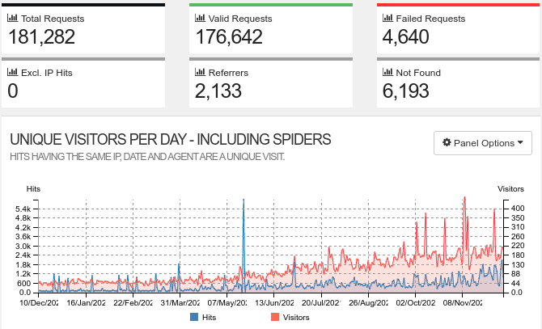
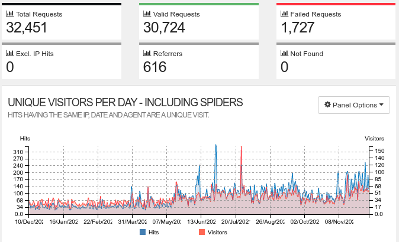

, 9 min read
Filtering Bots and Crawlers from Access.log
Original post is here eklausmeier.goip.de/blog/2021/12-13-filtering-bots-and-crawlers-from-access-log.
1. Problem statement. When you run a web-server on your machine many bots and crawlers will visit. When analysing how many "real" visitors you have, you should therefore suppress these entries in your analysis from your log file of the web-server.
This blog is served by Hiawatha web-server. Every visitor writes at least one entry into the web-server's log file. Hiawatha and many other web-servers call it access.log. Hiawatha has other log files, e.g., error.log, garbage.log, and system.log. An entry in access.log looks something like this:
192.168.178.24|Mon 13 Dec 2021 11:37:03 +0100|200|6148|GET /blog/2014/09-20-advances-in-automotive-technology/ HTTP/1.1||Mozilla/5.0 (X11; Linux x86_64) AppleWebKit/537.36 (KHTML, like Gecko) Chrome/95.0.4638.69 Safari/537.36|Host: nucsaaze|Connection: keep-alive|Cache-Control: max-age=0|Upgrade-Insecure-Requests: 1|Accept: text/html,application/xhtml+xml,application/xml;q=0.9,image/avif,image/webp,image/apng,*/*;q=0.8,application/signed-exchange;v=b3;q=0.9|Sec-GPC: 1|Accept-Encoding: gzip, deflate|Accept-Language: en-US,en;q=0.9
192.168.178.24|Mon 13 Dec 2021 11:37:04 +0100|200|168499|GET /img/RynoSingleWheel.jpg HTTP/1.1|http://nucsaaze/blog/2014/09-20-advances-in-automotive-technology/|Mozilla/5.0 (X11; Linux x86_64) AppleWebKit/537.36 (KHTML, like Gecko) Chrome/95.0.4638.69 Safari/537.36|Host: nucsaaze|Connection: keep-alive|Accept: image/avif,image/webp,image/apng,image/svg+xml,image/*,*/*;q=0.8|Sec-GPC: 1|Accept-Encoding: gzip, deflate|Accept-Language: en-US,en;q=0.9
192.168.178.24|Mon 13 Dec 2021 11:37:04 +0100|304|182|GET /img/LitMotorBike.jpg HTTP/1.1|http://nucsaaze/blog/2014/09-20-advances-in-automotive-technology/|Mozilla/5.0 (X11; Linux x86_64) AppleWebKit/537.36 (KHTML, like Gecko) Chrome/95.0.4638.69 Safari/537.36|Host: nucsaaze|Connection: keep-alive|Accept: image/avif,image/webp,image/apng,image/svg+xml,image/*,*/*;q=0.8|Sec-GPC: 1|Accept-Encoding: gzip, deflate|Accept-Language: en-US,en;q=0.9|If-Modified-Since: Mon, 13 Dec 2021 10:14:34 GMT
171.25.193.77|Mon 13 Dec 2021 12:58:31 +0100|200|6419|GET / HTTP/1.1||Mozilla/5.0 (Windows NT 10.0; Win64; x64) AppleWebKit/537.36 (KHTML, like Gecko) Chrome/95.0.4638.69 Safari/537.36|Host: 94.114.1.108:8443|Connection: close|Accept: */*|Accept-Encoding: gzip
185.220.100.242|Mon 13 Dec 2021 12:58:36 +0100|200|2456|GET /favicon.ico HTTP/1.1||Mozilla/5.0 (Windows NT 10.0; Win64; x64) AppleWebKit/537.36 (KHTML, like Gecko) Chrome/95.0.4638.69 Safari/537.36|Host: 94.114.1.108:8443|Connection: close|Accept: */*|Accept-Encoding: gzip
Hiawatha's access.log has the following fields, separated by |:
- host
- date
- code
- size
- URL
- referer
- user agent
- and other fields
2. Examples. Here is the Google-Bot, seen in access.log, which is a highly welcomed crawler:
66.249.76.169|Fri 10 Dec 2021 12:32:14 +0100|200|7037|GET /blog/2021/07-13-performance-comparison-c-vs-java-vs-javascript-vs-luajit-vs-pypy-vs-php-vs-python-vs-perl/ HTTP/1.1||Mozilla/5.0 (compatible; Googlebot/2.1; +http://www.google.com/bot.html)|Host: eklausmeier.goip.de|Connection: keep-alive|Accept: text/html,application/xhtml+xml,application/signed-exchange;v=b3,application/xml;q=0.9,*/*;q=0.8|From: googlebot(at)googlebot.com|Accept-Encoding: gzip, deflate, br|If-Modified-Since: Fri, 19 Nov 2021 04:23:35 GMT
Here are two entries of the Yandex-Bot, also highly welcomed:
5.255.253.106|Wed 08 Dec 2021 12:06:43 +0100|200|2761|GET /blog/2014/01-19-cisco-2014-annual-security-report-java-continues-to-be-most-vulnerable-of-all-web-exploits HTTP/1.1||Mozilla/5.0 (compatible; YandexBot/3.0; +http://yandex.com/bots)|Host: eklausmeier.goip.de|Connection: keep-alive|From: support@search.yandex.ru|Accept-Encoding: gzip,deflate|Accept: */*
213.180.203.141|Wed 08 Dec 2021 12:06:44 +0100|200|2434|GET /blog/2013/12-08-surfing-the-internet-with-100-mbits HTTP/1.1||Mozilla/5.0 (compatible; YandexBot/3.0; +http://yandex.com/bots)|Host: eklausmeier.goip.de|Connection: keep-alive|From: support@search.yandex.ru|Accept-Encoding: gzip,deflate|Accept: */*
Here is an example of a bot, whose purpose is doubtful and probably just nonsense:
45.155.205.233|Wed 08 Dec 2021 19:45:48 +0100|303|228|GET /index.php?s=/Index/\think\app/invokefunction&function=call_user_func_array&vars[0]=md5&vars[1][]=HelloThinkPHP21 HTTP/1.1||Mozilla/5.0 (Windows NT 10.0; Win64; x64) AppleWebKit/537.36 (KHTML, like Gecko) Chrome/78.0.3904.108 Safari/537.36|Host: 94.114.1.108:443|Accept-Encoding: gzip|Connection: close
Some of the bots and crawlers identify themselves in the user-agent field, e.g., Google and Yandex. But unfortunately, many do not. Quite the contrary, they try to hide as normal browsers.
Below Perl script accesslogFilter filters access.log so that only the "real" visitors remain. The script filters according:
- IP addresses: some bots and crawlers do not identify themselves, so we have to resort to naked addresses
- HTTP status codes
- identifying string in the user-agent field
3. Configuration. Here is the list of IP addresses I found to be "annoying" in any analysis:
my %ips = (
'18.212.118.57' => 0, '18.232.89.176' => 0, '3.94.81.106' => 0,
'34.239.184.105' => 0, '54.80.126.99' => 0, '54.162.60.209' => 0, # compute-1.amazonaws.com
'62.138.2.14' => 0, '62.138.2.214' => 0, '62.138.2.160' => 0,
'62.138.3.52' => 0, '62.138.6.15' => 0, '85.25.210.23' => 0, # startdedicated.de
'66.240.192.138' => 0, '66.240.219.133' => 0, '66.240.219.146' => 0, '66.240.236.119' => 0,
'71.6.135.131' => 0, '71.6.146.185' => 0, '71.6.158.166' => 0, '71.6.165.200' => 0,
'71.6.167.142' => 0, '71.6.199.23' => 0, '80.82.77.33' => 0, '80.82.77.139' => 0,
'82.221.105.6' => 0, '82.221.105.7' => 0, # shodan.io
'138.246.253.24' => 0, '106.55.250.60' => 0, # various robots.txt reader
'127.0.0.1' => 0, # localhost
'192.168.178.2' => 0, '192.168.178.20' => 0, '192.168.178.24' => 0,
'192.168.178.118' => 0, '192.168.178.249' => 0 # local network
);
For example, shodan.io does not identify itself in the user-agent string. Therefore I simply identified them by using nslookup:
$ nslookup 82.221.105.7
7.105.221.82.in-addr.arpa name = census11.shodan.io.
Here is the list of HTTP status codes, which are filtered out:
my %errorCode = ( 301 => 0, 302 => 0, 400 => 0, 403 => 0, 404 => 0, 405 => 0, 500 => 0, 501 => 0, 503 => 0, 505 => 0 );
Status code 404 would also be very useful to find links on my web-server which point to nowhere. But the bots are so numerous that it seems to be more beneficial to just filter it out.
Here is the list of user-agent strings, which identify a bot or crawler:
my %bots = (
adsbot => 0, adscanner => 0, ahrefsbot => 0, applebot => 0, 'archive.org_bot' => 0,
baiduspider => 0, bingbot => 0, blexbot => 0,
ccbot => 0, censysinspect => 0,
'clark-crawler2' => 0, crawler => 0, crawler2 => 0, 'crawler.php' => 0,
criteobot => 0, curl => 0,
dataforseobot => 0, dotbot => 0, 'feedsearch-crawler' => 0,
facebookexternalhit => 0, fluid => 0, 'go-http-client' => 0,
googlebot => 0, ioncrawl => 0, lighthouse => 0, ltx71 => 0,
mediapartners => 0, 'mediapartners-google' => 0,
netestate => 0, nuclei => 0, nicecrawler => 0, petalbot => 0,
proximic => 0, 'pulsepoint-ads.txt-crawler' => 0, 'python-requests' => 0,
semrushbot => 0, 'semrushbot-ba' => 0, sitecheckerbotcrawler => 0, sitelockspider => 0,
twitterbot => 0, ucrawl => 0,
virustotal => 0, 'web-crawler' => 0, 'webmeup-crawler' => 0,
'x-fb-crawlerbot' => 0, yandexbot => 0,
);
4. Perl script. With those configurations in place, the rest of the Perl script accesslogFilter is pretty straightforward:
use strict;
use Getopt::Std;
my %opts = ();
getopts('o:',\%opts);
my $statout = (defined($opts{'o'}) ? $opts{'o'} : undef);
my ($emptyUA,$badURL,$smallUA) = (0,0,0);
Put the above config, i.e., the hash tables after these declarations. Now the actual filtering-code:
W: while (<>) {
my @F = split /\|/;
if (defined($ips{$F[0]})) { $ips{$F[0]} += 1; next; }
if ($#F <= 5) { $emptyUA += 1; next; }
if (defined($errorCode{$F[2]})) { $errorCode{$F[2]} += 1; next; } # not found errors are ignored
if ($F[4] =~ /XDEBUG_SESSION_START|HelloThink(CMF|PHP)/) { $badURL += 1; next; }
if ($#F >= 6) { # Is UA field available?
if (length($F[6]) <= 3) { $smallUA += 1; next W; }
for ( split(/[ :;,\/\(\)\@]/,lc $F[6]) ) {
if (defined($bots{$_})) { $bots{$_} += 1; next W; } # skip bots
}
}
print;
}
For reporting purposes only, i.e., when given command line option -o report.txt, not required for filtering:
if (defined($statout)) {
open(F,">$statout") || die("Cannot write to $statout");
for (sort keys %ips) {
next if ($ips{$_} == 0);
printf(F "IP\t%d\t%s\n",$ips{$_},$_);
}
printf(F "eUA\t%d\n",$emptyUA);
printf(F "badURL\t%d\n",$badURL);
for (sort keys %errorCode) {
next if ($errorCode{$_} == 0);
printf(F "code\t%d\t%d\n",$errorCode{$_},$_);
}
printf(F "sUA\t%d\n",$smallUA);
for (sort keys %bots) {
next if ($bots{$_} == 0);
printf(F "bot\t%d\t%s\n",$bots{$_},$_);
}
}
The script is in GitHub: eklausme/bin/accesslogFilter.
5. Reporting. Now to get a feeling how much filtering actually happens when applying above rules:
- Unmodified access.log for ca. one year: 181,282 entries
- Filtered access.log with
accesslogFilter: 32,451 entries remain, i.e., less than 20%
So 80% of the visits of my web-server is stemming from bots, crawlers, junk, or from myself.
Unfiltered output of goaccess looks like this:

Filtered output of goaccess looks like this:

I have written about goacess here: Using GoAccess with Hiawatha Web-Server. Unfortunately goaccess is not good at filtering.
The statistics of accesslogFilter are below. First statistics for filtering according IP address. Host "startdedicated" is at the top:
IP 704 106.55.250.60
IP 154 127.0.0.1
IP 419 138.246.253.24
IP 335 18.212.118.57
IP 333 18.232.89.176
IP 1753 192.168.178.118
IP 1341 192.168.178.2
IP 1554 192.168.178.20
IP 6180 192.168.178.24
IP 496 192.168.178.249
IP 331 3.94.81.106
IP 335 34.239.184.105
IP 335 54.162.60.209
IP 329 54.80.126.99
IP 282 62.138.2.14
IP 6757 62.138.2.160
IP 286 62.138.2.214
IP 1353 62.138.3.52
IP 631 62.138.6.15
IP 11 66.240.192.138
IP 14 66.240.219.133
IP 6 66.240.219.146
IP 17 66.240.236.119
IP 32 71.6.135.131
IP 10 71.6.146.185
IP 14 71.6.158.166
IP 5 71.6.165.200
IP 10 71.6.167.142
IP 17 71.6.199.23
IP 32 80.82.77.139
IP 44 80.82.77.33
IP 52 82.221.105.6
IP 41 82.221.105.7
IP 15688 85.25.210.23
Above numbers are depicted in below pie-chart:
Special filtering according user-agent or bad/silly URL:
eUA 143
badURL 1835
sUA 3580
Distribution of filtered HTTP status code. As mentioned above, code 404 dominates by far:
code 16033 301
code 15 302
code 16 400
code 67 403
code 48222 404
code 3877 405
code 91 500
code 126 501
code 981 503
Above numbers as pie-chart:
Statistics on filtered entries according user-agent strings. Google is at the top, followed by Semrush:
bot 326 adsbot
bot 932 adscanner
bot 5163 ahrefsbot
bot 325 applebot
bot 18 archive.org_bot
bot 426 baiduspider
bot 1011 bingbot
bot 1105 blexbot
bot 2 ccbot
bot 1131 censysinspect
bot 182 clark-crawler2
bot 39 crawler
bot 88 crawler.php
bot 4 criteobot
bot 196 curl
bot 379 dataforseobot
bot 1688 dotbot
bot 8 facebookexternalhit
bot 1 feedsearch-crawler
bot 16 fluid
bot 226 go-http-client
bot 7016 googlebot
bot 34 ioncrawl
bot 19 ltx71
bot 2059 mediapartners-google
bot 410 netestate
bot 1 nicecrawler
bot 346 nuclei
bot 1088 petalbot
bot 77 proximic
bot 4 pulsepoint-ads.txt-crawler
bot 342 python-requests
bot 6609 semrushbot
bot 159 semrushbot-ba
bot 26 sitecheckerbotcrawler
bot 699 sitelockspider
bot 68 twitterbot
bot 2 ucrawl
bot 4 virustotal
bot 1715 yandexbot
Above data as pie-chart.
This gives a good graphical presentation why Bing, or Baidu are way inferior to Google search.
6. References. Below links might provide further information on bots & crawlers.
- Web Crawlers: Love the Good, but Kill the Bad and the Ugly: This post talks about limiting the bots & crawlers to your web-site as they are slowing down the entire server. The author mentions facebookexternalhit visiting his site 541 times per hour!
- IAB/ABC International Spiders and Bots List: A commercial list with bots, spiders, and crawlers. The list costs 15,000 USD.
- Bots and the Adobe Experience Cloud: AEC uses IAB.
- List of bots in StopBadBots: aBots.php
- AWStats robot list: robots.pm
Added 14-Mar-2022: I added further IP addresses, HTTP status codes, and bot names to script accesslogFilter. Then I compared the ratio of original log file to filtered log file. Below table shows the results. One can see that bots, crawlers, junk and myself make up to almost 90% of the traffic. Below table is chronologically in reverse order, i.e., lowest number is youngest.
| Log file | #entries | after filtering | ratio |
|---|---|---|---|
| 0 | 1813 | 375 | 0.207 |
| 1 | 10913 | 1605 | 0.147 |
| 2 | 8631 | 1411 | 0.163 |
| 3 | 8146 | 1287 | 0.158 |
| 4 | 10319 | 1380 | 0.134 |
| 5 | 6287 | 1276 | 0.203 |
| 6 | 8064 | 1239 | 0.154 |
| 7 | 9684 | 1023 | 0.106 |
| 8 | 6317 | 1110 | 0.176 |
| 9 | 8115 | 1096 | 0.135 |
| 10 | 7334 | 1302 | 0.178 |
| 11 | 6835 | 1262 | 0.185 |
| 12 | 7239 | 922 | 0.127 |
| 13 | 10457 | 1297 | 0.124 |
| 14 | 8897 | 1102 | 0.124 |
| 15 | 9554 | 1051 | 0.110 |
| 16 | 8945 | 1020 | 0.114 |
| 17 | 4873 | 891 | 0.183 |
| 18 | 4961 | 753 | 0.152 |
| 19 | 5865 | 611 | 0.104 |
| 20 | 4850 | 501 | 0.103 |
| 21 | 4290 | 492 | 0.115 |
| 22 | 4863 | 514 | 0.106 |
| 23 | 4652 | 485 | 0.104 |
| 24 | 4289 | 520 | 0.121 |
| 25 | 3940 | 706 | 0.179 |
| 26 | 4292 | 634 | 0.148 |
| 27 | 3044 | 608 | 0.200 |
| 28 | 4390 | 538 | 0.123 |
| 29 | 3149 | 410 | 0.130 |
| 30 | 4402 | 470 | 0.107 |
| 31 | 3894 | 456 | 0.117 |
| 32 | 3018 | 518 | 0.172 |
| 33 | 5170 | 646 | 0.125 |
| 34 | 3980 | 581 | 0.146 |
| 35 | 3325 | 457 | 0.137 |
| 36 | 2979 | 478 | 0.160 |
| 37 | 5648 | 596 | 0.106 |
| 38 | 3139 | 470 | 0.150 |
| 39 | 2859 | 360 | 0.126 |
| 40 | 3157 | 700 | 0.222 |
| 41 | 2370 | 280 | 0.118 |
| 42 | 3457 | 286 | 0.083 |
| 43 | 8597 | 403 | 0.047 |
| 44 | 2414 | 258 | 0.107 |
| 45 | 2913 | 318 | 0.109 |
| 46 | 1835 | 308 | 0.168 |
| 47 | 2027 | 420 | 0.207 |
| 48 | 1777 | 319 | 0.180 |
| 49 | 1369 | 443 | 0.324 |
| 50 | 2860 | 415 | 0.145 |
| 51 | 2965 | 292 | 0.098 |
| 52 | 1325 | 264 | 0.199 |
Added 29-Mar-2022: Added even more IP addresses and bot names to accesslogFilter. Table is now chronologically in order, i.e., lower number is older.
| Log file | #entries | after filtering | ratio |
|---|---|---|---|
| 1 | 1325 | 254 | 0.192 |
| 2 | 2965 | 286 | 0.096 |
| 3 | 2860 | 402 | 0.141 |
| 4 | 1369 | 416 | 0.304 |
| 5 | 1777 | 303 | 0.171 |
| 6 | 2027 | 404 | 0.199 |
| 7 | 1835 | 298 | 0.162 |
| 8 | 2913 | 297 | 0.102 |
| 9 | 2414 | 253 | 0.105 |
| 10 | 8597 | 400 | 0.047 |
| 11 | 3457 | 284 | 0.082 |
| 12 | 2370 | 277 | 0.117 |
| 13 | 3157 | 699 | 0.221 |
| 14 | 2859 | 358 | 0.125 |
| 15 | 3139 | 451 | 0.144 |
| 16 | 5648 | 556 | 0.098 |
| 17 | 2979 | 456 | 0.153 |
| 18 | 3325 | 442 | 0.133 |
| 19 | 3980 | 559 | 0.140 |
| 20 | 5170 | 626 | 0.121 |
| 21 | 3018 | 497 | 0.165 |
| 22 | 3894 | 441 | 0.113 |
| 23 | 4402 | 447 | 0.102 |
| 24 | 3149 | 394 | 0.125 |
| 25 | 4390 | 509 | 0.116 |
| 26 | 3044 | 580 | 0.191 |
| 27 | 4292 | 605 | 0.141 |
| 28 | 3940 | 675 | 0.171 |
| 29 | 4289 | 491 | 0.114 |
| 30 | 4652 | 466 | 0.100 |
| 31 | 4863 | 498 | 0.102 |
| 32 | 4290 | 464 | 0.108 |
| 33 | 4850 | 489 | 0.101 |
| 34 | 5865 | 591 | 0.101 |
| 35 | 4961 | 739 | 0.149 |
| 36 | 4873 | 861 | 0.177 |
| 37 | 8945 | 964 | 0.108 |
| 38 | 9554 | 994 | 0.104 |
| 39 | 8897 | 1067 | 0.120 |
| 40 | 10457 | 1270 | 0.121 |
| 41 | 7239 | 889 | 0.123 |
| 42 | 6835 | 1233 | 0.180 |
| 43 | 7334 | 1252 | 0.171 |
| 44 | 8115 | 1056 | 0.130 |
| 45 | 6317 | 1068 | 0.169 |
| 46 | 9684 | 974 | 0.101 |
| 47 | 8064 | 1119 | 0.139 |
| 48 | 6287 | 1251 | 0.199 |
| 49 | 10319 | 1341 | 0.130 |
| 50 | 8146 | 1107 | 0.136 |
| 51 | 8631 | 1237 | 0.143 |
| 52 | 10913 | 1309 | 0.120 |
| 53 | 7086 | 1364 | 0.192 |
| 54 | 8863 | 2121 | 0.239 |
| 55 | 5241 | 436 | 0.083 |
Script for generating this is:
for k in `seq 54 -1 0`; do
let km="55-$k"; i=access.log.$k; wci=`cat $i | wc -l`;
filt=`accesslogFilter $i | wc -l`; let pr="1.0*$filt/$wci";
printf " %2d | %5d | %4d | %6.3f\n" $km $wci $filt $pr;
done